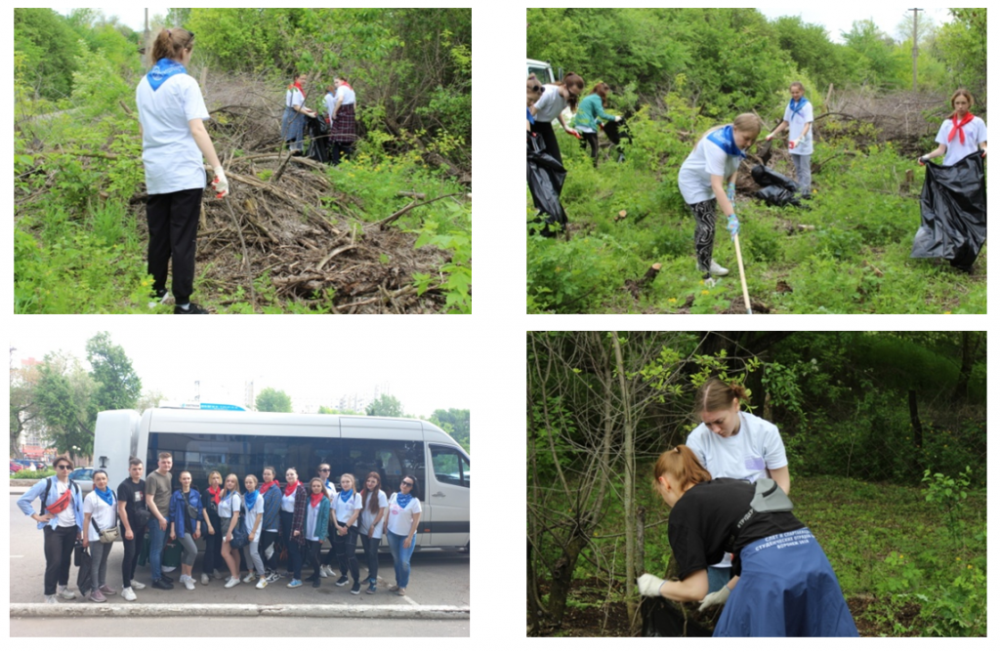
5 декабря 2022 года
День волонтера 2022
День волонтера 2022 в России или, как его еще называют,
Международный день добровольцев, отмечается 5 декабря. Этот
праздник нацелен привлечь внимание общественности к такому
важному делу, как волонтерство — безвозмездная помощь на благо
общества.История появления уходит в 1985 год, когда Ассамблея
ООН выдвинула предложение о проведении социально значимого для
всего мира праздника – День волонтера. Эти люди вносят огромный
вклад во все сферы общественной жизни, что не должно оставаться
незамеченным!С праздником дорогие друзья!
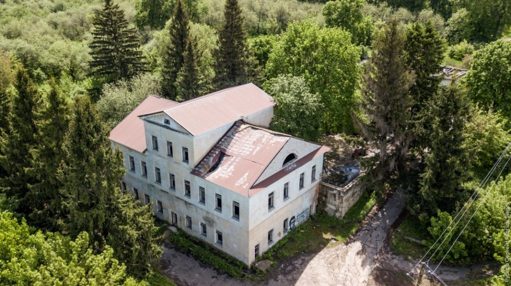
14 мая 2022 года
Акция «Генеральная уборка территории объекта культурного
наследия «Дача Башкирцевых»
Воронежская область, Семилукский район, г. Семилуки, ул. Дача,
1а. Объект культурного наследия "Дача Башкирцевых" 14 мая 2022
г.
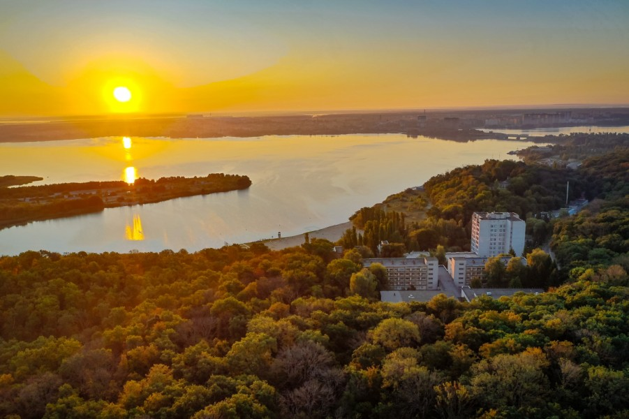
6 мая 2022 года
Акция «Генеральная уборка на территории выявленного объекта
культурного наследия достопримечательное место «Вантит»
Воронежская область, правый берег водохранилища, от санатория
им.Горького до участка автомагистрали М4-объездная вокруг г.
Воронежа 6 мая 2022 г.
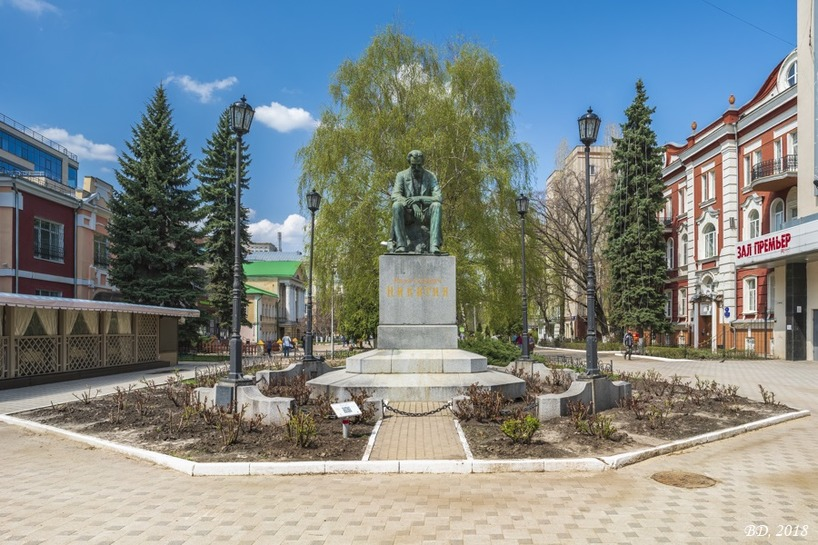
18 апреля 2022 года
Акция «Сохраним наследие вместе»
Международный День всемирного наследия, 18 апреля, на площади
Никитина и проспекте Революции города Воронежа пройдет
культурный флешмоб, квест-игра. Мероприятие призвано напомнить о
важности сохранения объектов исторического и культурного
наследия Воронежской области. Площадь Никитина в 11:30
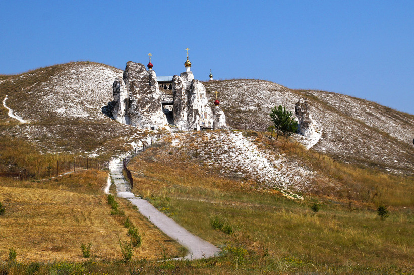
16 апреля 2022 года
Акция «Генеральная уборка объектов культурного наследия,
расположенных на территории Природный
архитектурно-археологический музей-заповедник «Дивногорье»»
Воронежская область, Лискинский район, хутор Дивногорье, ул.
Подгорная, 48 Природный архитектурно-археологический
музей-заповедник «Дивногорье»
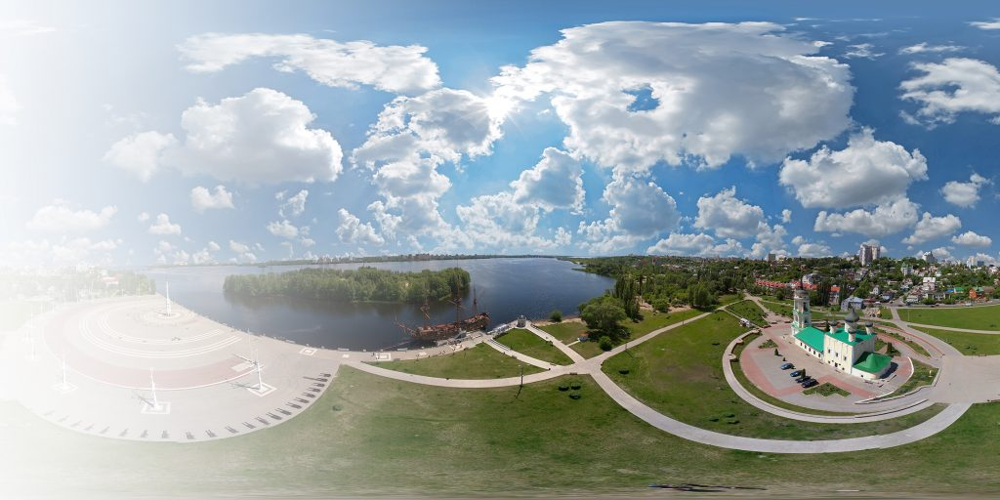
18 апреля 2021 года
Акция «Сохраним наследие вместе»
Культурный флешмоб на Адмиралтейской площади города Воронежа
18-го апреля 2021 года. Мероприятие призвано напомнить о
важности сохранения объектов исторического и культурного
наследия Воронежской области. Адмиралтейская площадь, г. Воронеж
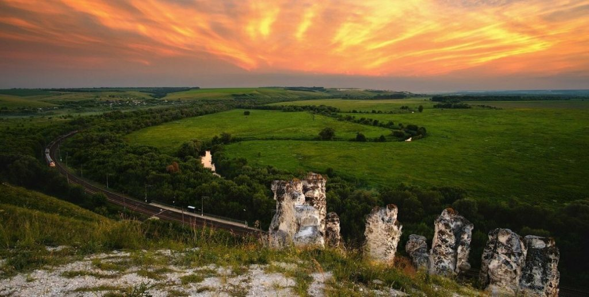
18 сентября 2021 года
Акция «Генеральная уборка объектов культурного наследия,
расположенных на территории Природный
архитектурно-археологический музей-заповедник «Дивногорье»
Воронежская область, Лискинский район, хутор Дивногорье, ул.
Подгорная, 48, Природный архитектурно-археологический
музей-заповедник «Дивногорье»
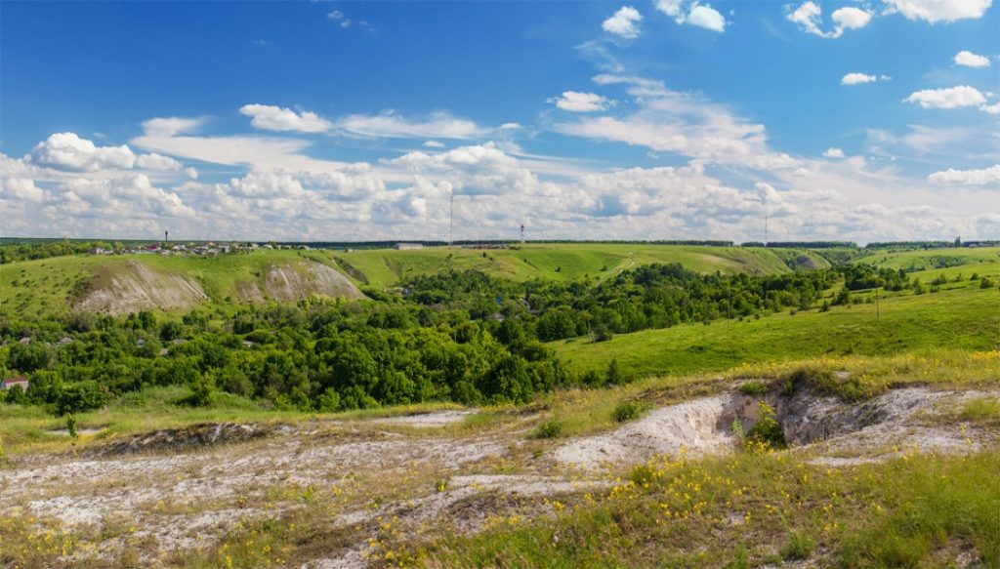
19 мая 2021 года
Акция «Генеральная уборка в границах территории объекта
культурного наследия регионального значения –
достопримечательного места «Костенковско-Борщевский
историко-культурный археологический комплекс»
Воронежская область, Хохольский район, с. Костенки, ул.
Гагарина, уч.1, ГБУК ВО «Государственный археологический
музей-заповедник «Костенки» Приглашаем всех на акцию
«Генеральная уборка в границах территории объекта культурного
наследия регионального значения – достопримечательного места
«Костенковско-Борщевский историко-культурный археологический
комплекс»
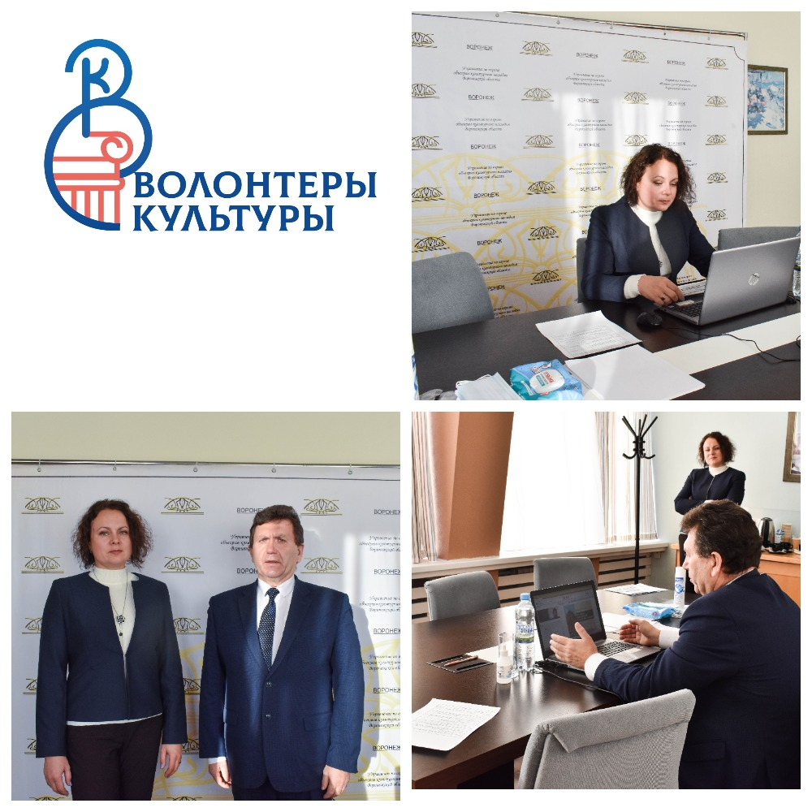
10 декабря 2020 года
Сегодня, 10 декабря, прошёл обучающий курс в формате online
«Сохраним архитектуру вместе»
Организаторы: Управление по охране объектов культурного наследия
Воронежской области; Автономное учреждение культуры Воронежской
области «Государственная инспекция историко-культурного
наследия; Выставочный Центр «ВЕТА» ТПП ВО; Союз
«Торгово-промышленная палата Воронежской области». В деловой
программе мероприятие приняли участие действующие реставраторы,
занятые в сфере сохранения культурного наследия. Эксперты
выступили с такими темами, как:Законодательное обеспечение
охраны объектов культурного наследия, роль волонтеров в
сохранении объектов культурного наследия; Особенности
проектирования на объектах культурного наследия; Особенности
реставрации объектов культурного наследия; Основы волонтерской
деятельности в сфере объектов культурного наследия; Опыт
волонтерской деятельности международного волонтерского лагеря.
Мероприятие началось с приветственного обращения руководителя
управления по охране объектов культурного наследия Воронежской
области - Перцева Владимира Александровича. Экспертами обучающей
программы выступили: Ивкович Марина Милорадовна, заместитель
руководителя управления по охране объектов культурного наследия
Воронежской области. Андреева Елена Игоревна, директор ООО
«Зодчие Черноземья». Соколова Ирина Владимировна, директор ООО
«Ника-Арт». Никитин Александр Петрович, председатель
Воронежского отделения Всероссийского общества охраны памятников
истории и культуры. Кроме этого деловая программа курса включила
в себя материалы Минкультуры России. Слушатели курса задавали
спикерам интересующие их вопросы по теме. Мероприятие
поспособствовало формированию сообщества активных граждан,
участвующих в волонтерской деятельности в сфере культуры,
реализующих творческие и социокультурные инициативы. Участники
ознакомились с основными принципами и процессами проведения
работ по сохранению объектов культурного наследия, аспектами
методологии проведения работ и с практическими приемами.
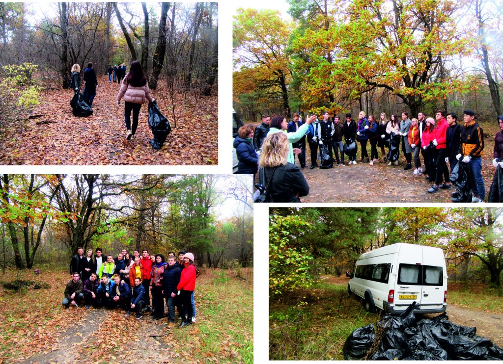
Благодарим за участие 11 октября 2019 года
Мероприятие по уборке территории объекта археологического
наследия «Курганный могильник эпохи бронза и раннего железного
века»
Врамках реализации национального проекта «Культура»
регионального проекта «Творческие люди» программы «Волонтеры
культуры» 11 октября 2019 года прошло культурное мероприятие с
привлечением добровольцев (волонтеров) на территории объекта
археологического наследия «Курганный могильник эпохи бронза и
раннего железного века», расположенного по адресу: Воронежская
область, Семилукский район, с. Подклетное. Памятник федерального
значения, состоящий под государственной охраной с наименованием
«Курганный могильник эпохи бронзы и раннего железного века»
более известен в научной литературе как «Подклетненский
могильник». Памятник расположен у западной окраины города
Воронежа в «Малой роще». На момент начала археологических
исследований экспедицией ВГУ под руководством А.Д. Пряхина в
70-е – 90-е гг. в могильнике насчитывалось около 70 насыпей.
Размеры насыпей были различны, от уплощенных диаметром 5-6 м и
высотой 5-10 см, до тех, что диаметром 26-28 м и высотой 2 м.
Отмечена концентрация насыпей в несколько групп, между которыми
находятся более обособленные курганы. Центральная, наиболее
крупная группа изучена практически полностью. Большая часть
погребений принадлежала к доно-волжской абашевской культуре.
Однако выявлены и единичные погребения среднедонской
катакомбной, воронежской и донской лесостепной срубной культур,
а также захоронения раннего железного века. Под некоторыми
курганами обнаружены свидетельства прямоугольных внемогильных
столбовых конструкций. Инвентарь погребений эпохи бронзы в целом
немногочислен и представлен, в основном, керамикой. Сосуды
находились не только в могильных ямах, но и на перекрытии или
около. Некоторые из них были предварительно разбиты, что
характерно для абашевских захоронений. Из орудий труда следует
выделить находки бронзовых шильев, нередко с остатками
деревянных рукоятей. Из украшений встречены бронзовые браслеты с
несомкнутыми приостренными концами, подвесками в полтора
оборота.
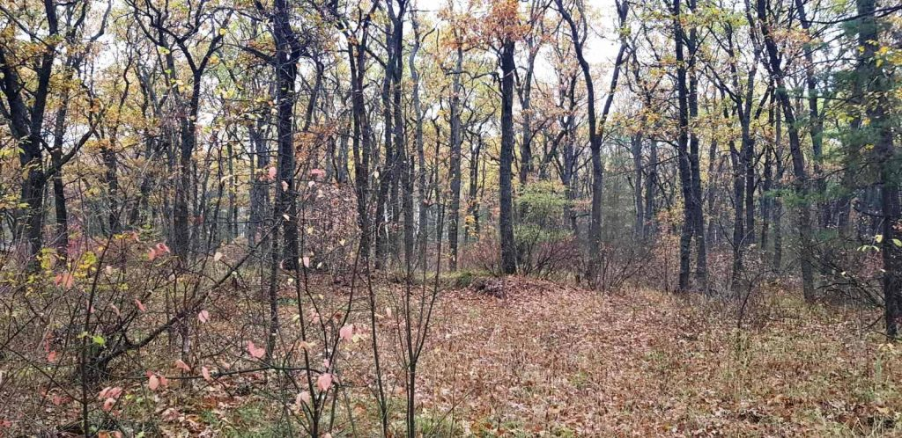
11 октября 2019 года
Приглашаем волонтёров культуры!!!
Врамках реализации национального проекта «Культура»
регионального проекта «Творческие люди» программы «Волонтеры
культуры» 11 октября 2019 года в 13:00 пройдет культурное
мероприятие с привлечением добровольцев (волонтеров) на
территории объекта археологического наследия «Курганный
могильник эпохи бронза и раннего железного века», расположенного
по адресу: Воронежская область, Семилукский район, с.
Подклетное. Волонтеры проведут уборку территории объекта
археологического наследия, после которой для участников будет
проведена экскурсия. Для уточнения подробностей звоните по
телефону 255-57-30
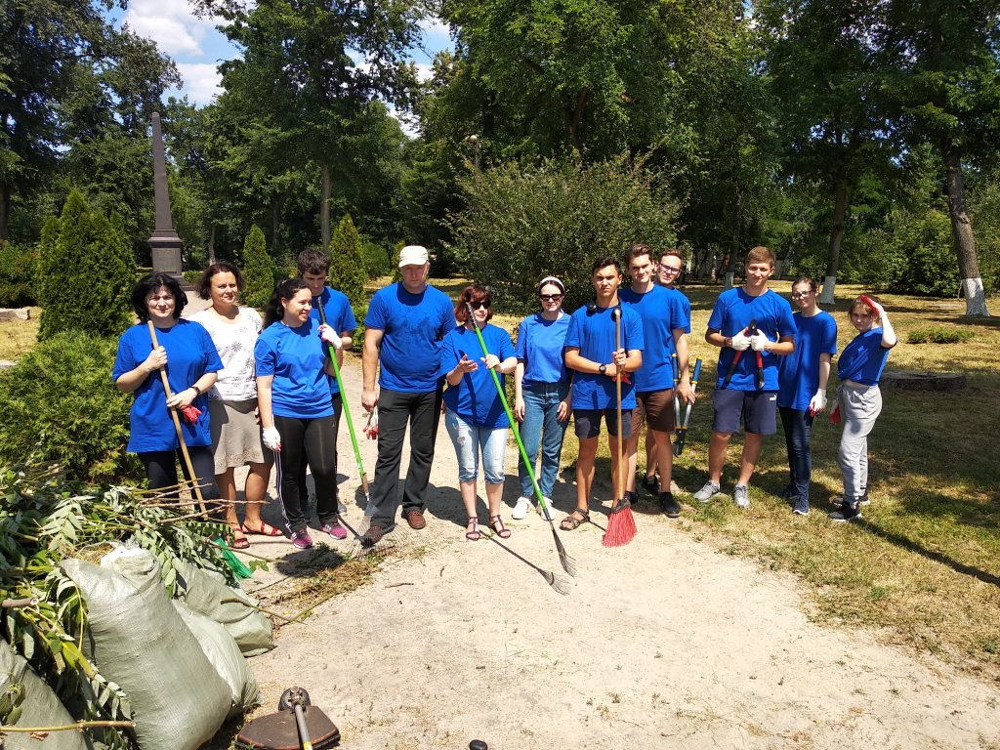
20 июня 2019 года
Волонтёры культуры
Вцелях привлечения общественности к сфере сохранения объектов
культурного наследия Воронежской области и популяризации
объектов культурного наследия Воронежской области было проведено
мероприятие на территории объекта культурного наследия
регионального значения «Терновое кладбище», расположенное по
адресу: г. Воронеж, территория между ул. Дзиньковского и М.
Терновой. Количество волонтеров (добровольцев) принявших
участие: 20 человек. На территории Тернового кладбища было
сделано следующее: уборка территории объекта культурного
наследия, покраска деревьев, лавочек, очистка могильных плит от
мусора и грязи по итогу проведена экскурсия для участников
мероприятия; привлечение добровольцев (волонтеров) к
осуществлению добровольческой (волонтерской) деятельности.
20 мая 2019
Привлечение волонтеров
В2019 году управление по охране объектов культурного наследия
Воронежской области организует мероприятия с привлечением
добровольцев (волонтеров) в сфере сохранения, использования,
популяризации объектов культурного наследия Воронежской области.
Место проведения мероприятия: территория объекта культурного
наследия регионального значения «Терновое кладбище»,
расположенное по адресу: г. Воронеж, территория между ул.
Дзиньковского М. Терновой. Дата и время проведения: 20 июня 2019
года в 10:00. Мероприятие представляет собой уборку территории
объекта культурного наследия, по завершению которой участникам
будет проведена бесплатная экскурсия по территории. Терновое
кладбище является одним из древнейших из сохранившихся
некрополей Воронежа. Оно возникло в начале 1770-х гг. и уже
обозначено на плане Воронежа 1773 г., т. е. до утверждения
генерального плана развития города 1774 г. Кладбище не было
престижным, здесь хоронили жителей прилежащих к нему частей
города и соседней Троицкой слободы. В 1838 г. по проекту
архитектора С.И. Соколова на кладбище была по-строена каменная
церковь "Сошествия Святого Духа на Апостолов", именовавшаяся еще
и Троицкой, с приделами Казанской Божией Матери и Святых
Митрофана и Тихона, епископов Воронежских. Здесь похоронены
участники войны 1812 г.: капитан И.С. Мягкий (ок. 1781-1871),
участник Бородинского сражения и битвы при Лейпциге; пол-ковник
Я.М. Старков (1775-1856) - участник Итальянского похода А.В.
Су-ворова и заграничных походов русской армии 1813-1814 гг.,
автор воспоми-наний "Рассказы русского воина"; генерал-майор
Д.И. Халютин (ок. 1793 -1862) — участник заграничных походов
русской армии 1813-1814 гг., участ-ник взятия Парижа и др. На
кладбище были похоронены офицеры, погибшие в Первой мировой
войне. Среди деятелей культуры, похороненных здесь, —
архитектор, автор ряда общественных зданий Воронежа, С.И.
Соколов (1802-1868); священник Троицкой церкви, член Воронежской
ученой архивной комиссии Г.В. Снеса-рев, расстрелянный в 1919
г., и ученый-ветеринар, земский деятель, основавший в Воронеже в
1912 г. земскую ветеринарно-фельдшерскую школу, А.И. Веревкин
(1862-1926).